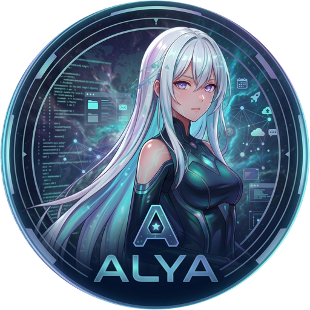

ALYA
En línea
Callar
Voz
Nueva
Nueva conversación
Historial
Configuración
Estado del sistema
Atajos
Acerca de ALYA
Salir
Hola, soy ALYA
Tu asistente personal para tu escritorio.
¿Qué quieres hacer?
Analizar sistema
CPU · RAM · GPU
Crear imagen
Genera contenido
Buscar archivos
En tus carpetas
Controlar PC
Apps · música · web